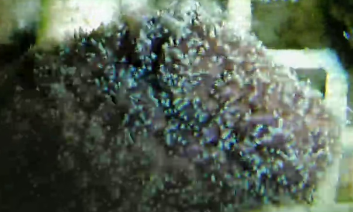

Galaxea
盔形珊瑚属（学名：Galaxea）属于真叶珊瑚科，是群体型造礁石珊瑚的重要类群，以其独特的星形珊瑚杯和侵略性生长而闻名。这些珊瑚形成大型包覆到块状的群体，可以主导礁区。
 Galaxea fascicularis 丛生盔型珊瑚
Galaxea fascicularis 丛生盔型珊瑚

Galaxea 盔型珊瑚
形态特征
不同物种的Galaxea群体形态各异，G. fascicularis形成细长的柱状，是已知最大的珊瑚之一；G. paucisepta和G. longisepta形成扁平板状；G. acrhelia呈树枝状，其他物种形成圆顶和圆形丘状。小型G. fascicularis群体通常形成低矮圆顶，但随着生长，群体变得更不规则、呈块状丘状或柱状，最终可达5米宽。珊瑚骨骼块状，形状多变，珊瑚杯多而密集，呈圆形或椭圆形、长方形，甚至不规则形 Aquaml。珊瑚杯体小而拥挤，边缘突起或甚至有柄，边缘有大量细小的隔片，呈轮状排列并突出形成尖锐的脊。
分布范围
盔形珊瑚属在印度-太平洋地区和红海的珊瑚礁上丰富，生活在水深不到20米的水域，偏好浑浊的地点。盔形珊瑚属在印度-太平洋广泛分布，中国的台湾、广东、广西沿岸、海南岛、东沙、西沙和南沙群岛均有分布。
生态作用
盔形珊瑚属是群体型造礁石珊瑚的重要类群，为鱼类、甲壳类等海洋生物提供栖息环境。